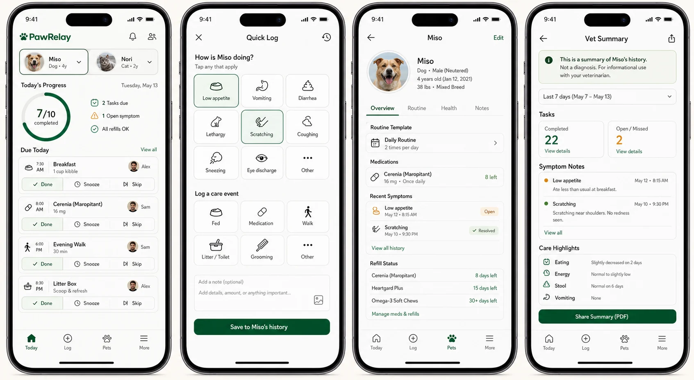

01 / EXPLORE
질문에서 시작했습니다. 흩어진 관심과 실험 사이에서 반복되는 문제를 찾았습니다.Seunghyeon 포트폴리오
02 / BUILD
아이디어를 제품으로. 사용자의 하루 안에서 실제로 작동하는 흐름을 설계하고 출시했습니다.
03 / OPERATE
한 번을 시스템으로. 발견, 검토, 실행, 영수증, 검증을 끊기지 않는 운영 루프로 연결했습니다.04 / SYSTEMIZE
노하우를 도구로. 사람의 판단이 필요한 지점까지 명시하는 검증형 도구를 만들었습니다.05 / VERIFY
실패도 증거로 남겼습니다. 좋은 이야기보다 재현 가능한 결과를 선택했습니다.- TRADES
- 190
- BASE
- -24.24%
- MISMATCH
- 0
06 / CONNECT
이제 더 큰 문제를 함께. 제품, 운영, 검증을 하나의 실행력으로 연결합니다.
AI PRODUCT · AUTOMATION SYSTEMS
SEUNGHYEON
만들고, 운영하고, 증명합니다.
00.0 / 15.0
SELECTED SYSTEMS / 04
결과보다 과정까지 설명할 수 있는 작업.
제품을 만들고 끝내지 않았습니다. 운영 방식과 검증 근거까지 함께 설계했습니다.
01
PawRelay
가족과 커플 사이에서 반려동물 돌봄이 빠지거나 중복되는 문제를 하나의 생활 흐름으로 정리했습니다.
- 역할
- 제품 설계 · 모바일 구현 · 출시 운영
- 접근
- 오늘의 돌봄, 가족 동기화, 인수인계, 증상 기록을 하나의 핵심 흐름으로 연결
- 근거
- Google Play v38 · 177개 제공 국가/지역 · Play 설치 QA
02
Multi-Mac Operations
여러 기기에 흩어진 반복 업무를 무작정 자동화하지 않고, 사람이 확인해야 하는 지점을 포함한 운영 시스템으로 만들었습니다.
- 역할
- 워크플로 설계 · 브라우저 자동화 · 운영 관측
- 접근
- 발견 → 초안 → 검토 → 실행 → 영수증 → 사후 검증
- 원칙
- 결과가 불명확하면 재시도하지 않고 중단하는 fail-closed 상태
- 01DISCOVERread only
- 02DRAFTlocal state
- 03REVIEWhuman gate
- 04ACTapproved
- 05VERIFYreceipt bound
UNKNOWN → STOP
03
Claude Skillsets
AI 도구를 많이 모으는 대신, 어떤 도구를 왜 선택했고 지금 실행해도 되는지를 증거와 상태로 설명하는 시스템을 설계했습니다.
- 역할
- 정보 구조 · 결정 브로커 · 검증 파이프라인
- 접근
- 고정된 소스, 결정론적 생성, exact-SHA 증거, 명시적 보류 상태
- 현재 상태
- 20/20 검토 대기 · 0/20 실행 가능
20REVIEW
HELD00EXECUTABLE
NOW
HELD00EXECUTABLE
NOW
- software-engineeringreview_pending
- product-strategyreview_pending
- automation-opsreview_pending
- research-evidencereview_pending
04
F301
수익이 나지 않은 전략도 숨기지 않았습니다. 비용, 시간 순서, 벤치마크, 독립 재계산까지 남겨 틀린 가설을 확실히 종료했습니다.
- 검증
- 190회 거래 · 시간순 분할 · 거래비용 스트레스
- 결과
- 기본 -24.24% · UPRO 보유 +26.40%
- 감사
- 원시 Parquet 독립 재계산 · 중요 불일치 0
VERDICTHYPOTHESIS REJECTEDCONFIRMED
- TRADES
- 190
- BASE
- -24.24%
- STRESS
- -62.49%
- UPRO HOLD
- +26.40%
- MISMATCH
- 0
{
"split_trade_counts": [64, 63, 63],
"holding_minutes": 30,
"audit_classification": "independent_raw_parquet_recalculation",
"material_mismatch_count": 0
}OPERATING MODEL / 03
Build. Operate. Verify.
문제를 제품으로
사용자 문제를 좁히고, 실제 흐름을 설계하고, 출시 가능한 형태까지 만듭니다.
반복을 운영으로
사람의 승인과 실패 상태를 포함해, 반복할수록 더 안전해지는 시스템을 설계합니다.
주장을 증거로
테스트, 영수증, 비용, 실패 결과를 남겨 무엇이 실제로 작동했는지 설명합니다.
EARLIER EXPERIMENTS
먼저 만들어 본 것들.
COLLABORATION / BUSINESS PARTNERS
다음 시스템은 함께 만들 수 있습니다.
아이디어를 제품으로 만들거나, 반복 업무를 운영 시스템으로 바꾸거나, 이미 만든 것의 근거를 다시 검증하는 일.
파트너 아이디어
제품 구축
시스템 운영
증거 반환